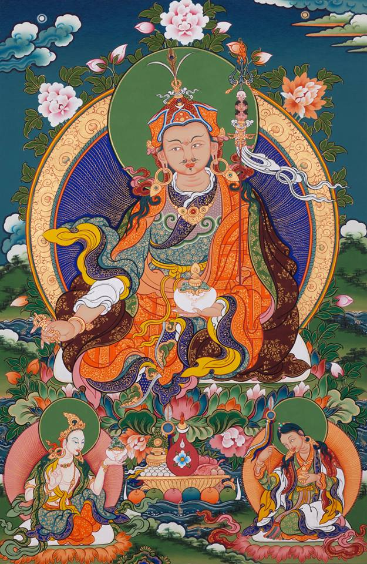

Лонгчен Нінгтік
Лінія передачі школи Нінгма тибетського буддизму
Релігійна організація України № 38778275 в ЄДРПО з 2013 року



Інші майстри Нінгма Кама: Розгдом Махапандіта, Міпам Рінпоче, Патрул Рінпоче, Нгаванг Палзанг.
Традиція перекладів започаткована Гуру Падмасабхавою яка включає слово Будди та коментарі (канжур та танжур), а також повне зібрання тантр древніх.
Тексти практик ліній Дуджом Терсар, Пема Лінгпа Затер Чодзо, Кончок Чиду, Лонгсал Нінгпо Затер та інші.
Всевідуючий Лонгчен Рабджам Дріме Озер (1308–1364) в 26 томах своїх праць, включно з Семи Скарбницями, Трьома Трилогіями та Тетралогією Сердечної Сутності.
Рігдзін Джікме Лінгпа (1729–1798) був великим йогіном та тертоном. Найбільша його робота була Дорогоцінна Скарбниця Якостей яка є викладенням шляху сутри і тантри. Його труди і терма Лонгчен Нінгтік зібрані в 14 томах.